Nouvelle Vague is a project I worked on for ultranoir, It offers a poetic and interactive real-time 3D experience based on Twitter. In a minimalist and surrealist world, Tweets are carried out with different flying objects from the borders of the scene to the center where stands the ultranoir black statue (tweets are retrieved from your selected hashtag).
Flying objects are air balloons, biplane, UFOs, zeppelins, balloons. Each has its own speed and specific paths. The user can select any of these ships to take advantage of the pilot’s view and explore the scene. In this post I will explain how we made it.
- 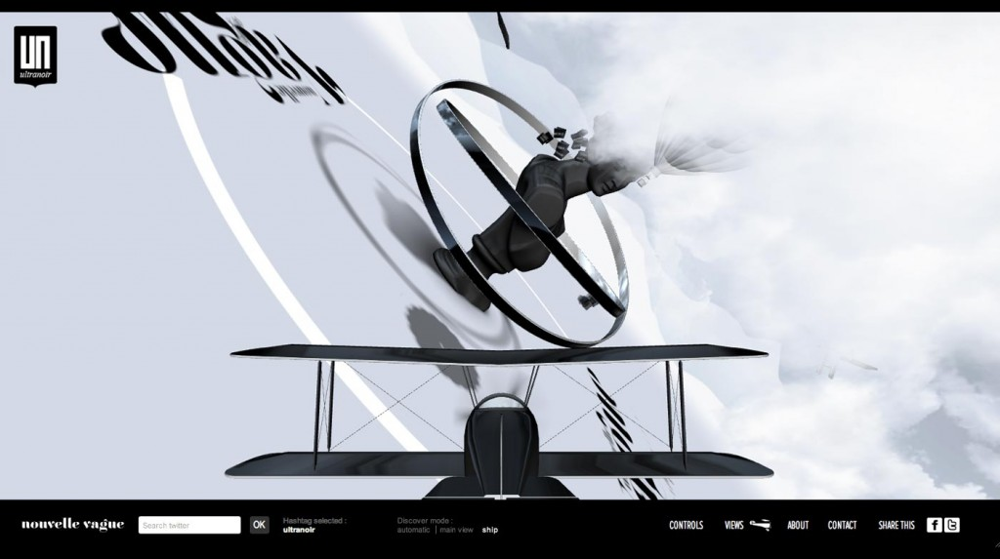
- 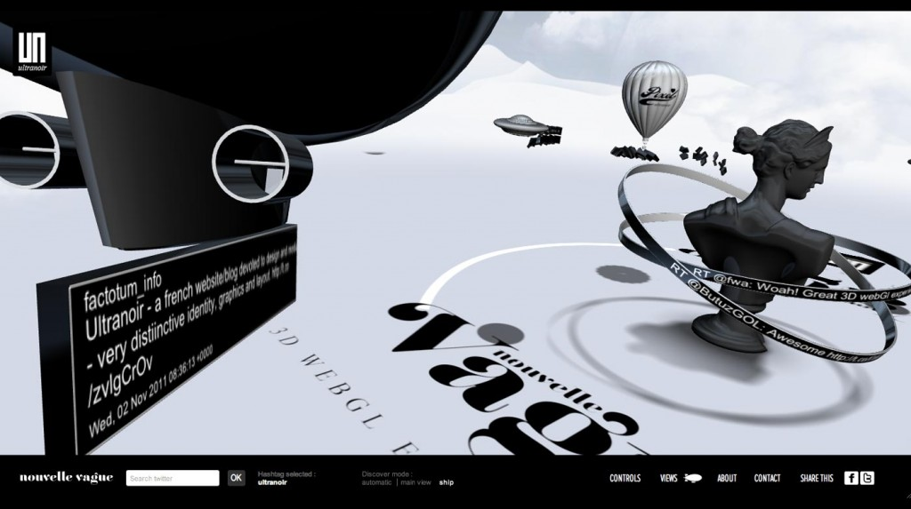
click for real time version here ( after the video intro ). If your browser does not support webgl you can watch a video version on youtube
Scene
We wanted to have vehicles coming from mountain/sky to the statue and leave a tweet. We did not want to manage vehicle collisions, after a while, we decided to organize scene and vehicles animations like the picture below.
- 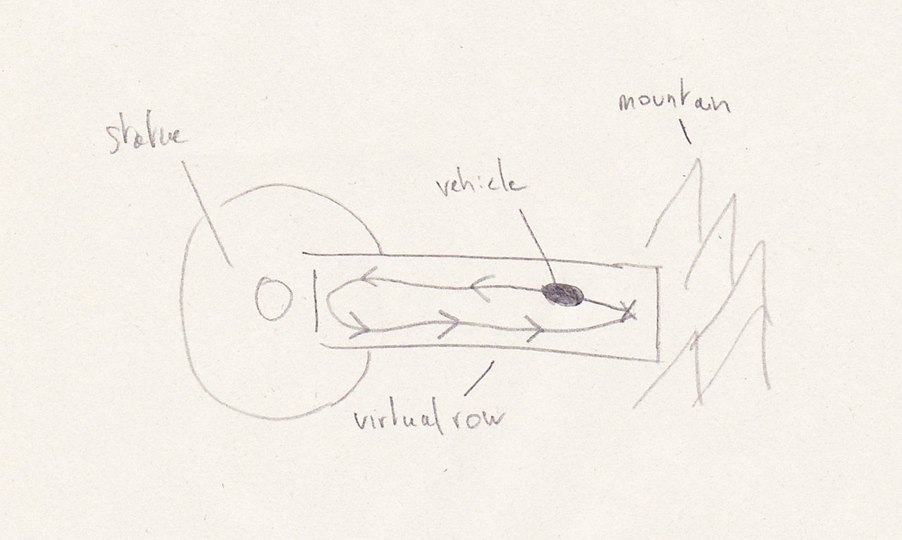
- 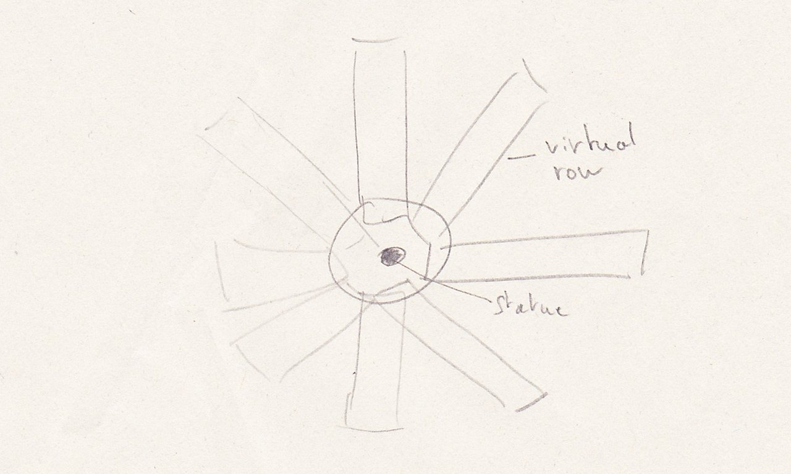
The idea is to avoid vehicles to penetrate each other, for this we constrained each vehicle in a 'row' in which the animation will be played (off course the animation must be setup to fit in that virtual row). Doing this we minimized collision between vehicles but we knew it will not be 100% perfect and sometime you could see artifact near the statue.
Animation's vehicle were played in loop mode. To add a bit of randomness I added a random delay at the beginning of a new loop to avoid vehicles to be synchronized together (eyes are very good to detect those pattern). Animations were made using blender and to make it work with osgjs I had to update it to support keyframes container from osg, it also means that now the osgjs plugin for osg is able to export osgAnimation data. Why using this workflow ? In all my project I use OpenSceneGraph as a swiss knife, then I export data from osg to osgjs.
Drawing Texts
The text and logo on the ground were displayed using distance map. When you have vector shape with closed shape like text/logo it's more efficient to use distance map instead of classical texture mapping. The advantage is that you can use less texture size and with better result than just bitmap. To do this you have to convert your original texture into a new one (distance map) then you use a 'special' shader to display it in realtime. Below you can see picture from the Valve paper, both image are at the same resolution.
(Pictures from valve paper)
The only problem I had was for the big text/logo in center of the scene, even with distance map I had aliasing because of the static 'edge size' in the shader.
float start = 0.5-edgeSize;
float end = 0.5+edgeSize;
float a = smoothstep(start, end, color);
To fix this, I adapted the 'edgeSize' depending on the camera position, it's more a hack to fix aliasing than a real fix.
Camera
We implemented 2 cameras, one for the center of the scene to watch the statue and tweets and one in each vehicles. Camera in vehicles was more tricky because vehicles comes and back with the tweets. In the beginning I had a simple lookat camera that was located in the vehicle but looked to the statue. It worked but not really interesting, we wanted to be in the plane and see the looping. To do that I changed the camera to fps one. To tune camera and let the artist configure them, I added offset connected to html sliders. Good but vehicles came in and went back after bringing their tweets, so the problem was that we were seeing an empty screen (the mountain) when the vehicles returned to their original position. We resolved this by changing the camera from 'in vehicle' to the camera 'look to the statue from the vehicle'. Finally for automatic mode we improved the camera to select the best camera available. It meant that we checked for each vehicles the time in their animation, and select the vehicles that has a time in 'good' range. Off course we had to tune the range for each animations of vehicles. You can see below the differents event in timeline for a vehicles.
- 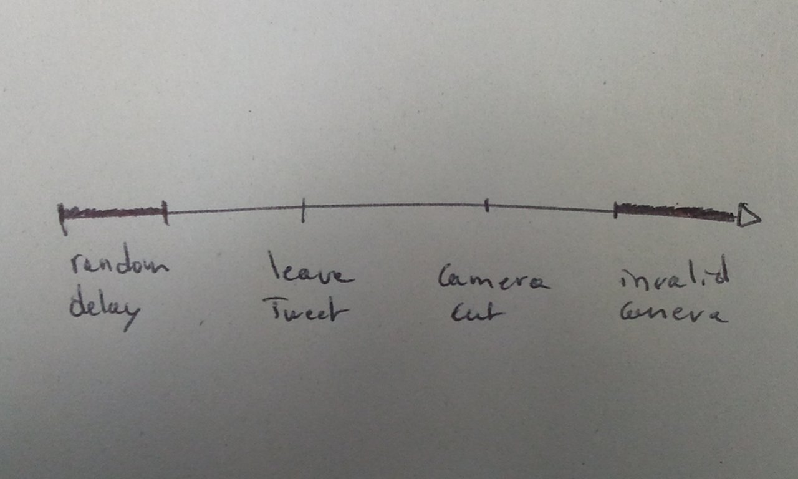
- 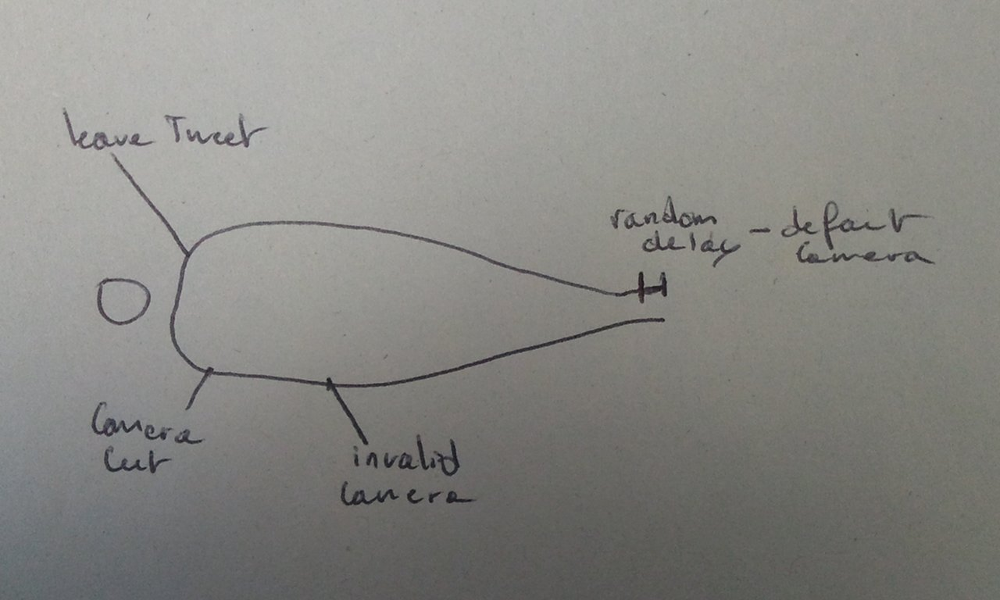
Delay Random: random time before playing vehicle animation. Leave tweet: time when the tweet box leave the vehicle and play the transition animation. Camera cut: when the vehicle start to go back, we cut to watch the statue and tweets. Camera invalid: camera invalid means the vehicle can't be selected when the camera switch to a new one
Shadow
The ground was a plane so I took advantage of this to use flat textured quad that followed the position of the vehicle but at 0 in z. Shadow textures were generated by the artist then converted to distance map and finally used on the quad. We used distance map on those texture because it gave more control, for example the blur of the edge. It worked on most vehicles except for the plane because of its animations (the shadow would not follow the plane rotation). To fix this I used a matrix that project the shape of the plane onto the ground. Using this method meant no soft edges for shadow plus some artifact due to blending. Deadline make us to fix it later.
- 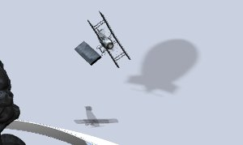
- 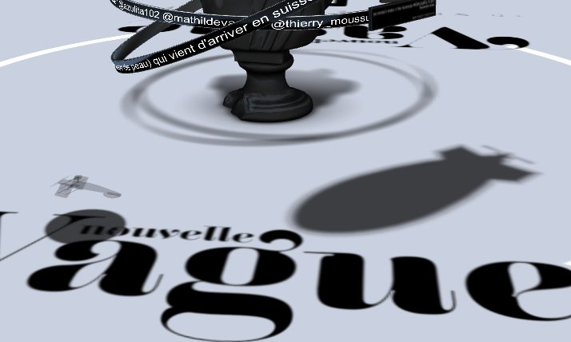
There is a shadow example in osgjs that explains differents shadow techniques.
Transitions
To make the tweets going from vehicles to the statue, we had to make a transition. I wanted to try something like disolving the tweet box to a lot of smaller cubes and then moved them like they are transported by wind to the statue. I first setup the effect on this page and then improved it with a fake wind like in the demojs-fff. To finish I added a simple fade out when cubes are near the statue and voila. The effect was not optimized and I used one 3d model per cube, that would be better to use pseudo instancied cube or pack all cube into one model and passing transformation to the shader with attributes or uniforms, again time...
- 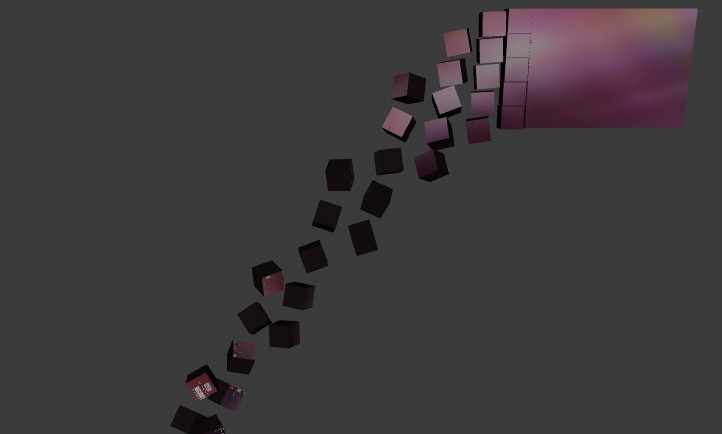
- 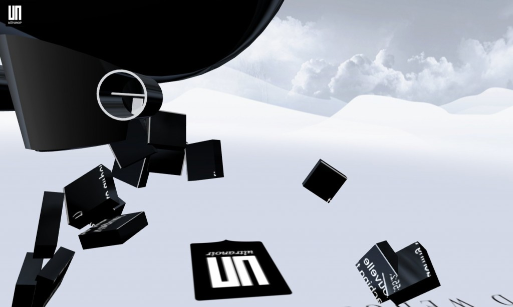
Clouds
I wanted to try volumetric clouds on this project. For this I tried different method
- mega particles (youtube video). Because of the shower doors effect I dropped this method after a few tries.
- 3d volume textures, I started but I needed more time to implement it. The idea was to generate a 3d texture based on noise function then in realtime draw slice to represent the volume. I will try to release an example later.
- Particles based. Like particles you draw different textured sprite with transparency. In this case you have to sort sprite from the camera position and render with blending enabled. I used this method because of time and it worked enough. On screenshots below you can see some test with tuning parameters of clouds.
- 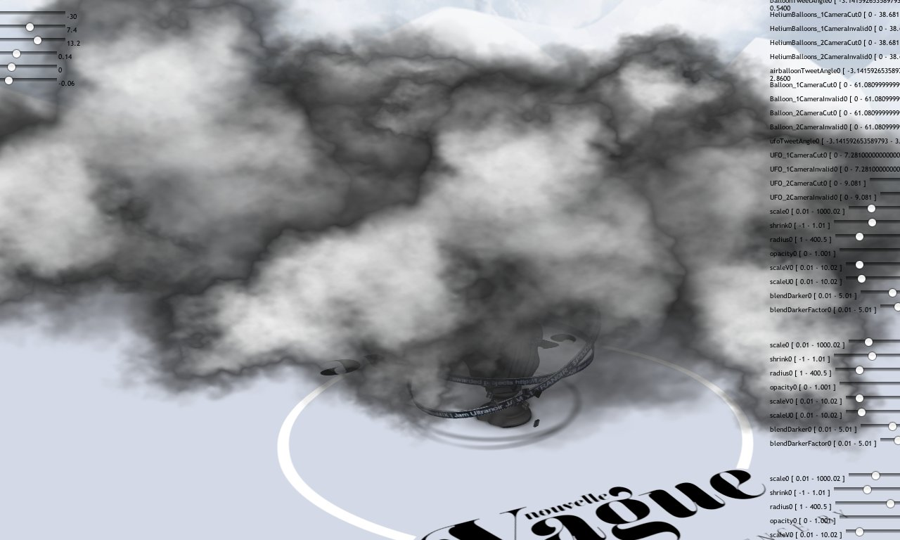
- 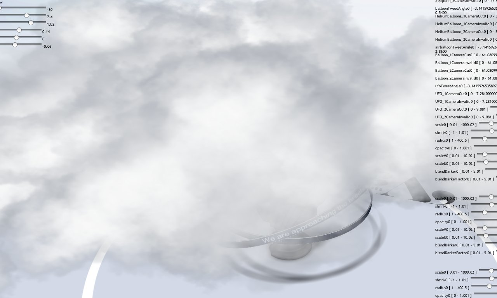
Tools
One of the most important aspect when I worked on this project was how we setup and tuned effects. I wrote scripts to export 3d models, generate distancemap as usual, but the new tool I wrote for this project was to integrate automatic slider generation from shader parameters. To do this, I wrote functions that were able to check variable and type in shaders and from those informations created html slider elements that communicated directly with the shaders. To let artists tune effect and focus only on the desired effects I added and not think if they could lose or not their work, I saved value with localstorage. When artists were happy with the result they sent me by mail the value then I added their value as 'defaults' value. This process could be improved in futur with undo and save set of parameters, but even without that it was really convenient to let artist worked this way. You can see on the screenshot below the sliders used to fine tune the rendering effects.
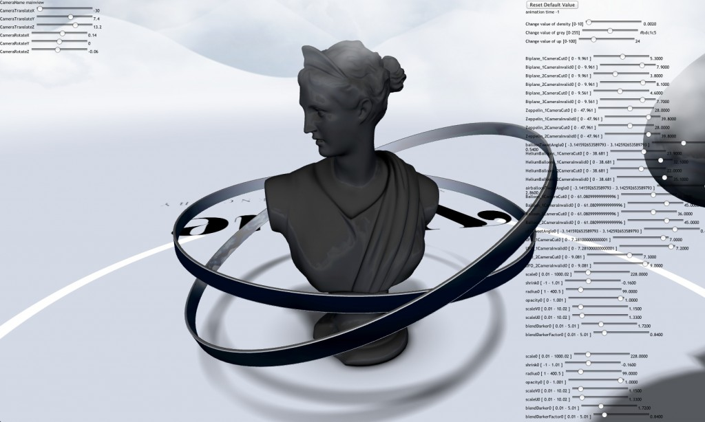
You can try the developer version and play with sliders